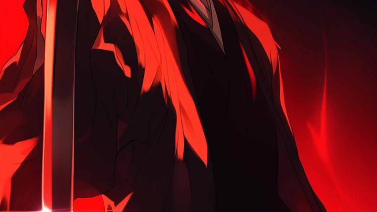
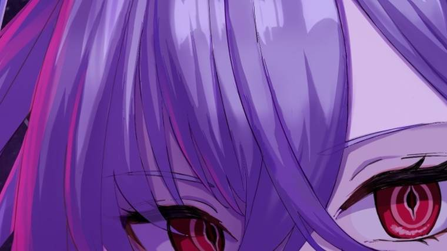
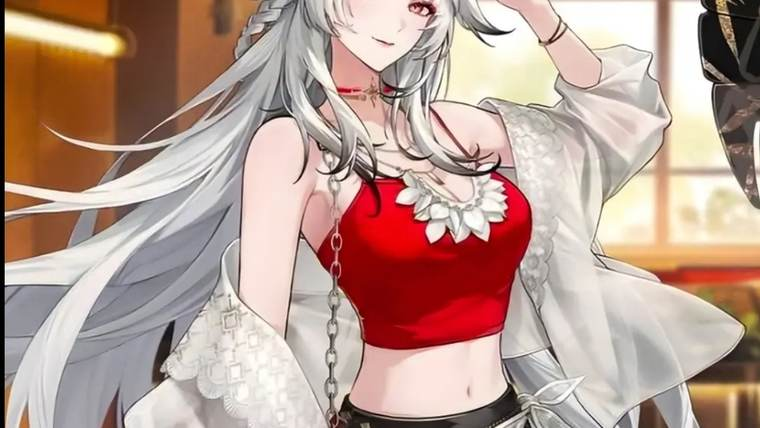
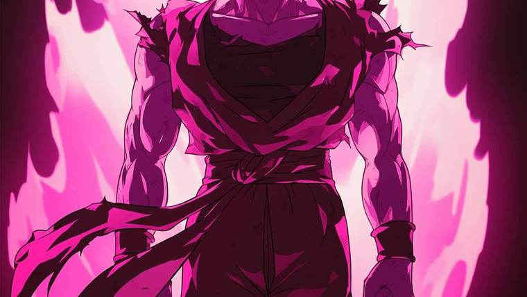

News
Anime & game news
Season watch lists, gacha banner schedules and game release dates — written plainly, with leaks clearly marked as leaks.
All news
5 posts
Fall 2026 Anime: The Complete Watch List and Release Dates
Every major anime airing in October 2026 — JoJo's Steel Ball Run, the Bleach finale and The Apothecary Diaries Season 3 — with release dates and how to plan your watchlist.

Genshin Impact 7.1 Banners: Vesna, Vodyanitsa and the Skirk Rerun
Genshin Impact 7.1 banners explained: the new 5-stars Vesna and Vodyanitsa, the Skirk and Escoffier reruns, weapons, dates and what to pull.

Wuthering Waves 3.7 and 3.8: Hsin, Suoming and Lily Explained
Wuthering Waves 3.7 banner schedule, the new Resonators Hsin and Suoming, and everything known so far about 3.8's Lily.

Dragon Ball Super: Beerus — Premiere Date, Cast, Themes and Everything Confirmed
Dragon Ball Super: Beerus premieres on 11 October 2026. Here is every confirmed detail — the themes, the staff, and the New York Comic Con premiere screening.
The Most Anticipated Anime Games of 2027 (and What We Know So Far)
Azur Promilia, Neverness to Everness, Solo Leveling: KARMA and more — the anime games to watch in 2027 and what is actually confirmed.